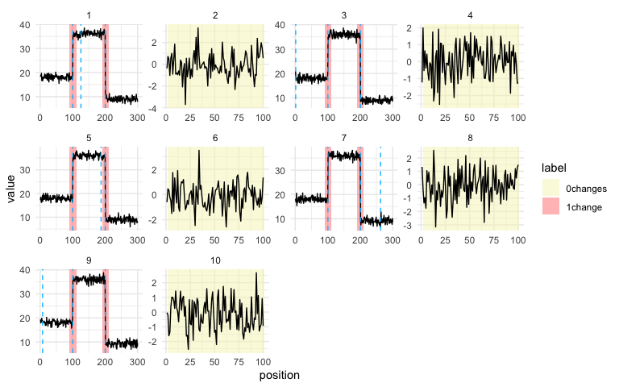

mlr3changepoint adds weakly supervised changepoint detection to mlr3. A changepoint or peak model needs a penalty that sets how many changes it keeps. The package learns that penalty for each sequence from labelled examples, as a function of features of the sequence. Its tasks, learners, predictions and measures work with resample(), benchmark() and tuning.
The supervision is weak. Each label covers a region of a sequence and says how many changes it holds, for example 1change on positions 90 to 110 or 0changes on a flat stretch. A label does not give the position of a change or a value for each point. Changepoint labels follow penaltyLearning, and peak labels follow PeakError.
The package is developed during Google Summer of Code 2026, and its API may still change.
Installation
# install.packages("pak")
pak::pak("sleepysnorlax05/mlr3changepoint", dependencies = TRUE)dependencies = TRUE also installs the solvers and regressors the learners use. The MMIT and MMIF learners need the mmit package, which is not on CRAN. Its upstream sources no longer compile on macOS and Windows, so pak installs a patched copy from sleepysnorlax05/mmit/Rpackage.
Learners and measures
| Learner | Regressor |
|---|---|
changepoint.intregrcv |
L1-regularised linear interval regression (penaltyLearning) |
changepoint.xgboost.aft |
Gradient boosted trees with the accelerated failure time loss (xgboost) |
changepoint.mmit |
Maximum margin interval tree (mmit) |
changepoint.mmif |
Maximum margin interval forest (mmit) |
| Measure | What it scores |
|---|---|
changepoint.label_error |
Share of labelled regions with a false positive or false negative |
changepoint.label_accuracy |
One minus the label error |
changepoint.auc |
Area under the ROC curve traced by shifting all predicted penalties |
Example
Ten toy sequences: odd ones change mean twice and carry a 1change label around each change, even ones are flat with a 0changes label.
library(mlr3)
#> Warning: package 'mlr3' was built under R version 4.4.3
library(mlr3changepoint)
library(data.table)
set.seed(36)
signal = vector("list", 10L)
label = vector("list", 10L)
for (i in seq_len(10L)) {
if (i %% 2L == 1L) {
signal[[i]] = c(rnorm(100, 18), rnorm(100, 36), rnorm(100, 9))
label[[i]] = data.table(start = c(90, 190), end = c(110, 210), label = "1change")
} else {
signal[[i]] = rnorm(100, 0)
label[[i]] = data.table(start = 1, end = 100, label = "0changes")
}
}
task = TaskCpt$new(
id = "toy", backend = data.table(signal = signal, label = label),
target = "label", sequence = "signal", label_type = "changepoint"
)Train the interval regression learner, predict a log(lambda) for each sequence, and score the label error and AUC.
learner = lrn("changepoint.intregrcv", Kmax = 3L, n.folds = 2L, min.observations = 2L)
learner$train(task)
#> Loading required namespace: future.apply
#> Warning: package 'future' was built under R version 4.4.3
#> Warning: Using `size` aesthetic for lines was deprecated in ggplot2 3.4.0.
#> i Please use `linewidth` instead.
#> i The deprecated feature was likely used in the penaltyLearning package.
#> Please report the issue at <https://github.com/tdhock/penaltyLearning/issues>.
#> This warning is displayed once per session.
#> Call `lifecycle::last_lifecycle_warnings()` to see where this warning was generated.
prediction = learner$predict(task)
prediction$score(msrs(c("changepoint.label_error", "changepoint.auc")), task = task)
#> changepoint.label_error changepoint.auc
#> 0 1autoplot() draws each sequence with its labelled regions and dashed lines at the predicted changes.
ggplot2::autoplot(prediction, task = task)
Documentation
The package website starts with Getting started. It also has a chapter on each part of the package and case studies on real and simulated data. Report bugs and questions in the issue tracker.
Related work
- penaltyLearning: supervised penalty learning for changepoint detection, and the source of the labelled-region setup used here.
- changepoint: classical changepoint methods. Its SegNeigh solver computes the changepoint model paths.
-
PeakSegOptimal and PeakError: optimal peak models and peak label errors, used for
"peak"labels. - mmit: maximum margin interval trees and forests.
- rupturesRcpp, binsegRcpp, fpop and dust: fast unsupervised segmentation.
Acknowledgements
mlr3changepoint is developed during Google Summer of Code 2026 for the R Project for Statistical Computing. Thanks to the mentors Toby Hocking, Marc Becker and Tung Lam Nguyen, and to the mlr-org team for the mlr3 ecosystem this package extends.